VIVANT シリーズ2
各話のあらすじ・人物関係・伏線・考察を、見返しながら分かりやすく整理していきます。
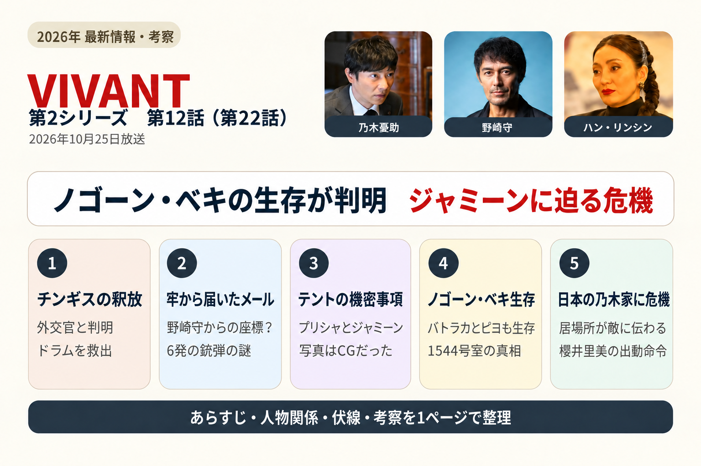
第12話｜ノゴーン・ベキの生存とジャミーンの危機
チンギスの釈放、ドラム救出、ノゴーン・ベキら3人の生存、1544号室の真相、乃木家への襲撃を整理します。

第11話｜チンギスの決断と敵地からの脱出
李茗沢の最期とF、チンギスの救援、高田明敏の怒り、別班儀礼曲と脱出、野崎守の動向を整理します。
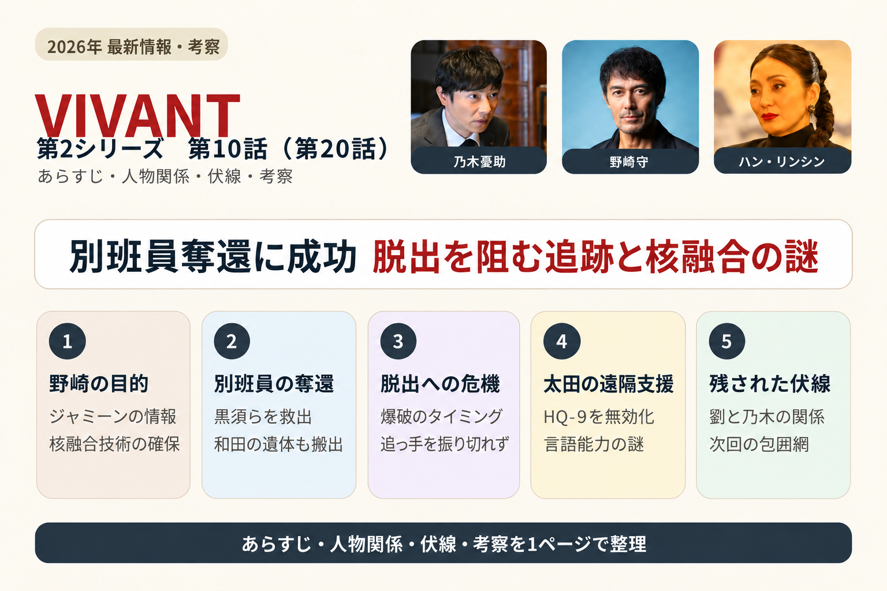
第10話｜別班員奪還と核融合の謎、脱出への危機
野崎とジャミーン、黒須らの救出と和田貢の死亡、太田梨歩の遠隔支援、脱出を阻む追跡を整理します。
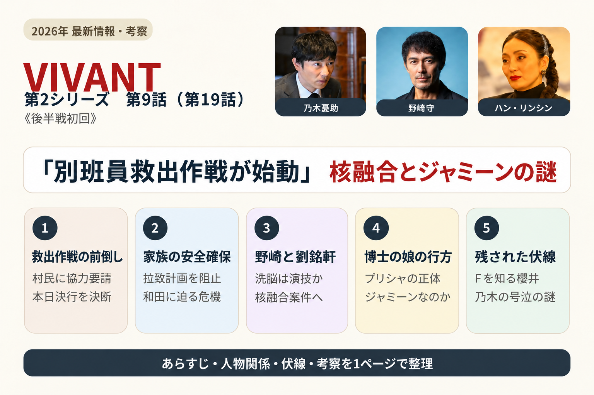
第9話｜別班員救出作戦と核融合をめぐる謎
オルコ村への協力要請、家族の安全確保、野崎と劉銘軒、ジャミーンの正体につながる伏線を整理します。
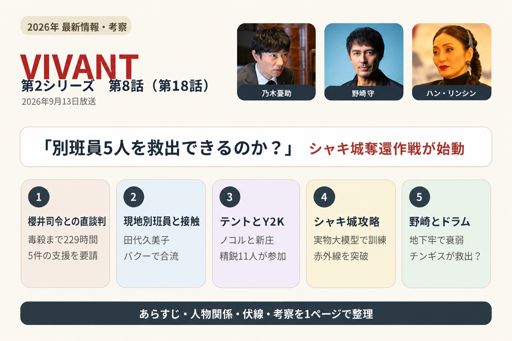
第8話｜別班員5人奪還へ、野崎とドラムの危機
乃木の奪還作戦、テントとの共闘、シャキ城攻略、野崎とドラムの安否、第19話へ続く伏線と謎を整理します。
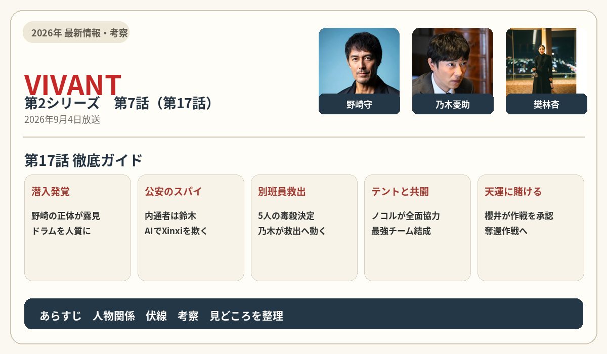
第7話｜野崎の潜入発覚、公安のスパイ、そして別班員5人奪還へ
野崎の潜入発覚、公安内部のXinxiスパイ、黒須たち別班員5人の毒殺決定、乃木とノコル・テントの共闘を整理します。
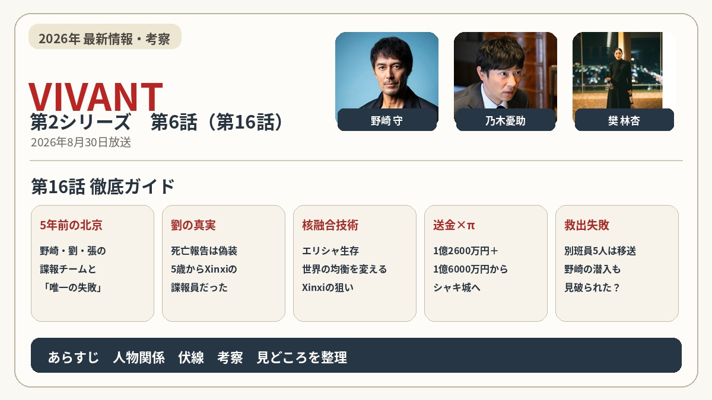
第6話｜5年前の北京、劉銘軒の真実、シャキ城と核融合技術
野崎のXinxi潜入の起源、死んだはずの劉銘軒、2回の送金×π、別班員5人の移送までを整理します。
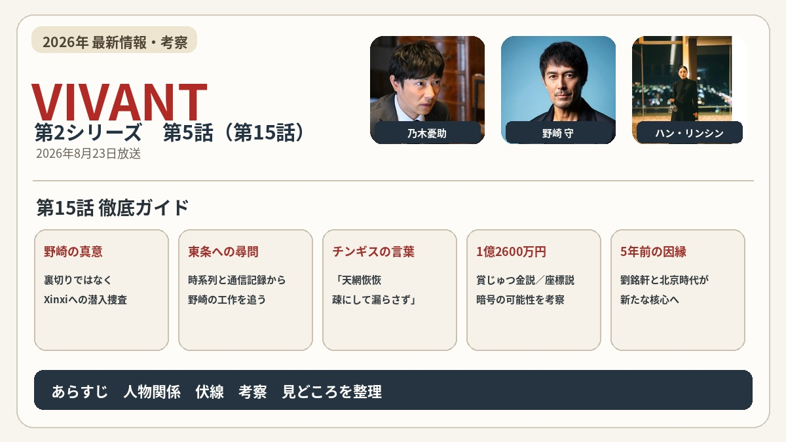
第5話｜野崎の潜入捜査、1億2600万円、劉銘軒の謎
東条への尋問、チンギスの言葉、佐野が明かす5年前の北京、Xinxiシンシーへ潜入した野崎の真意を整理します。
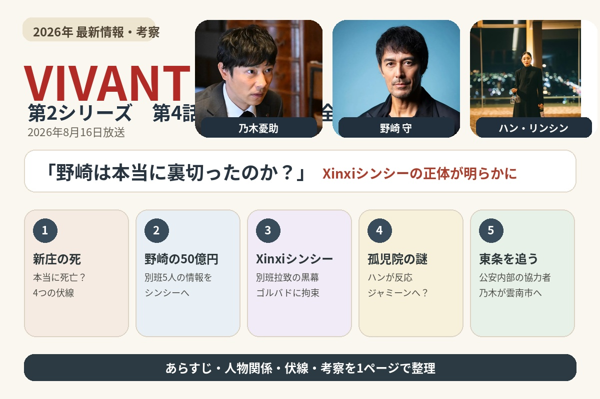
第4話｜野崎の裏切り、新庄の死、そしてXinxiシンシーの正体
新庄の死に残る伏線、野崎とXinxiシンシー、別班員5人、孤児院とジャミーンにつながる謎を整理します。
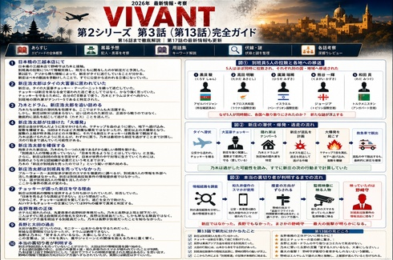
第3話｜新庄の潔白、長野の正体、そして野崎への疑念
新庄を追い詰めた先で事件の構図が反転。長野専務の正体と、野崎に向けられた最大の疑いまでを整理します。
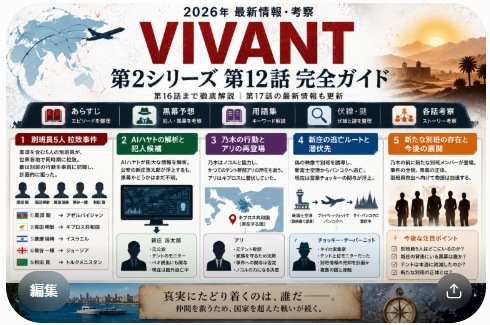
第2話｜新庄の逃亡ルート、チョッキー、そして新たな別班
アリの尋問、新庄の本当の逃亡先、情報売却計画、そして長野専務の正体までを整理します。
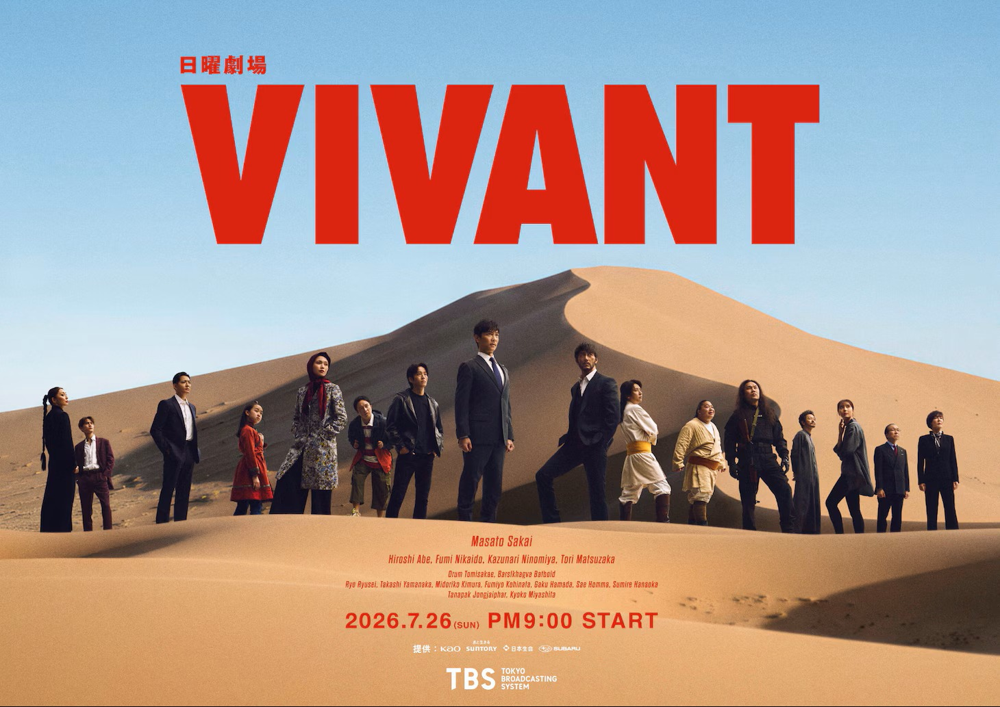
第1話｜赤い饅頭、別班員5人拉致、そして「1544」の謎
前作ラストから直結。別班が「追う側」から「狙われる側」へ変わる新章の始まりを整理します。